Resumen
Antes de aprobar un préstamo, un banco necesita responder dos preguntas muy concretas: ¿qué tan probable es que el cliente deje de pagar? y, si eso ocurre, ¿cuánto dinero terminará perdiendo después de intentar cobrarlo? En este trabajo respondemos ambas preguntas usando perceptrones multicapa sobre créditos de consumo sin garantía de Lending Club, y juntamos los dos resultados para estimar la pérdida esperada de cada préstamo desde el momento en que se aprueba.
Como las redes neuronales no siempre son la mejor opción para datos en tablas, pusimos a prueba cada red frente a un modelo sencillo de referencia bajo reglas estrictamente justas: exactamente los mismos datos preparados sin información del futuro, las mismas particiones temporales para simular el paso real del tiempo, un presupuesto de búsqueda de configuraciones explícito y treinta corridas independientes para medir qué tanto varían los resultados por puro azar.
Por último, convertimos el modelo de riesgo en una tarjeta de puntaje clara para cualquier solicitante, analizamos qué factores pesan más en la decisión y publicamos una aplicación web donde cualquier persona puede calcular su puntaje y probar qué tendría que cambiar en su perfil para mejorarlo.
Caso de uso
Contexto del negocio, decisiones y regla anti-fuga
Lending Club es una plataforma estadounidense de préstamos entre pares (peer-to-peer lending) que conecta a solicitantes con inversionistas o bancos. Sus créditos son de consumo sin garantía prendaria ni hipotecaria (unsecured consumer loans): a diferencia de un crédito hipotecario o vehicular, no existe un activo tangible de respaldo, por lo que si el prestatario entra en cesación de pagos la entidad enfrenta una pérdida crediticia directa.
| Pregunta | Definición |
|---|---|
| ¿Quién usa el modelo? | El analista de riesgo crediticio o el motor automatizado de originación de la entidad. |
| ¿En qué momento se usa el modelo? | Al momento exacto de la solicitud y evaluación del crédito, antes de decidir su otorgamiento o desembolso. |
| ¿Para qué decisiones sirve el modelo? | 1) Admisión y pérdida esperada: evaluar la probabilidad de
incumplimiento (PD) y el costo estimado de pérdida en caso de impago (LGD y pérdida esperada). 2) Scorecard: asignar un puntaje transparente (300 a 850 puntos) comprensible para el banco y el cliente. |
| ¿Con qué información se entrena el modelo? | Únicamente variables conocidas y verificadas en la fecha de originación
(issue_d): capacidad de pago, historial crediticio, liquidez rotativa, estabilidad
laboral y condiciones del préstamo. |
Datos
Se usa el conjunto Credit Risk Analysis de Kaggle (Ranadeep, s. f.), descargado el 27 de octubre de 2026, con créditos de consumo de Lending Club. El significado de cada variable se cita desde el diccionario oficial (LendingClub, s. f.), no desde una herramienta de IA.
- Fuente
- Kaggle · Credit Risk Analysis (
loan.csv) - Registros
- 887 379 créditos
- Variables
- 74 columnas
- Período
- Originación entre junio de 2007 y diciembre de 2015
- Fecha de descarga
- 27 de octubre de 2026
- Diccionario
data/LCDataDictionary.xlsx, hojaLoanStats
| Aspecto | Detalle |
|---|---|
| De dónde se bajaron | Repositorio público Credit Risk Analysis en Kaggle
(ranadeep/credit-risk-dataset, archivo crudo loan.csv de Lending Club).
|
| Fecha de descarga | 27 de octubre de 2026. |
| Qué contiene la descarga | 887 379 créditos de consumo y 74 columnas con originación entre junio de 2007 y
diciembre de 2015, acompañados del diccionario oficial LCDataDictionary.xlsx (hoja
LoanStats). |
| Momento de decisión | Al evaluar la solicitud en la fecha de originación (issue_d), antes de
aprobar o desembolsar. |
Nota. Elaboración propia a partir del conjunto descargado en Kaggle (Ranadeep, s. f.) y su diccionario oficial (LendingClub, s. f.).
El archivo crudo pesa cerca de 442 MB y no se sube al repositorio.1Se versionan las tablas procesadas en formato Parquet y los modelos entrenados. Ver la sección de reproducibilidad.
Información permitida frente a información prohibida
Para entrenar sin fuga de información (no data leakage), solo ingresan variables disponibles y
verificadas en la fecha de originación (issue_d). De las 74 columnas del
archivo original, se seleccionan únicamente 21 variables base (13 numéricas originales, 3
numéricas derivadas al originar y 5 categóricas) que, tras imputación con indicadores de faltantes y
codificación one-hot, producen 54 variables numéricas de entrada. Otras
14 columnas generadas después del desembolso quedan explícitamente prohibidas, y las
restantes columnas administrativas, de texto libre o identificadores se descartan en la selección.
| Variable (tipo) | Significado literal (LCDataDictionary.xlsx · LoanStats)
|
Rol en el análisis de riesgo | Uso |
|---|---|---|---|
| Dimensión 1 · Capacidad de pago y carga financiera (flujo de caja) | |||
annual_incNumérica |
Ingreso anual autodeclarado por el solicitante durante el registro. | A mayor ingreso, mayor capacidad de ahorro y resiliencia ante contingencias económicas. | Sí entra |
dtiNumérica |
Relación entre los pagos mensuales totales de deuda (sin hipoteca ni este préstamo LC) y el ingreso mensual autodeclarado. | Predictor crítico. Un DTI elevado (ej. 45 %) revela asfixia financiera y alta vulnerabilidad al impago. | Sí entra |
installmentNumérica |
Cuota mensual que deberá pagar el prestatario si se origina el crédito. | Mide la carga directa que el nuevo préstamo impone sobre el flujo de caja mensual. | Sí entra |
loan_amntNumérica |
Monto listado del préstamo solicitado por el prestatario; si el departamento de crédito lo reduce posteriormente, ese cambio se refleja en este valor. | Montos mayores exigen un esfuerzo prolongado de pago y elevan la exposición ante impago. | Sí entra |
funded_amntNumérica |
Monto comprometido y fondeado para ese crédito en el momento de emisión. | Captura la exposición efectiva comprometida en la originación del préstamo. | Sí entra |
| Dimensión 2 · Carácter e historial crediticio (comportamiento pasado) | |||
delinq_2yrsNumérica |
Número de incidencias de mora de 30+ días en el historial durante los últimos 2 años. | Quien tuvo moras recientes presenta mayor probabilidad de reincidir en incumplimiento. | Sí entra |
pub_recNumérica |
Número de registros públicos desfavorables. | Incluye quiebras, bancarrotas o embargos; es señal crítica de insolvencia estructural previa frente a acreedores. | Sí entra |
inq_last_6mthsNumérica |
Consultas de crédito en el buró en los últimos 6 meses (excluyendo auto e hipoteca). | Varias consultas recientes revelan búsqueda urgente de liquidez (credit hunger). | Sí entra |
meses_historial_creditoDerivada ( earliest_cr_line) |
Antigüedad crediticia en meses desde la apertura de la primera línea reportada hasta
issue_d. |
Un historial maduro con pocos incidentes refleja disciplina y confiabilidad sostenida. | Sí entra |
| Dimensión 3 · Estrés de liquidez y líneas rotativas | |||
revol_utilNumérica |
Porcentaje de utilización de crédito rotativo respecto al cupo total disponible. | Predictor clave. Usar casi todo el cupo (ej. 90 %) deja sin margen ante imprevistos; por debajo del 30 % sugiere holgura. | Sí entra |
revol_balNumérica |
Saldo total adeudado en líneas de crédito rotativo. | Refleja la magnitud nominal de la deuda corriente de corto plazo. | Sí entra |
open_accNumérica |
Número de líneas de crédito abiertas actualmente en el expediente del solicitante. | Mide la carga simultánea de obligaciones activas que administra el cliente. | Sí entra |
total_accNumérica |
Número total de líneas de crédito históricas y vigentes registradas en el expediente. | Captura la profundidad, madurez y diversificación de la experiencia crediticia. | Sí entra |
| Dimensión 4 · Estabilidad laboral y arraigo | |||
antiguedad_empleoDerivada ( emp_length)
|
Años en el empleo actual (escala de 0 para menos de 1 año hasta 10 para diez años o más). | Mayor permanencia laboral reduce el riesgo de interrupción súbita de ingresos. | Sí entra |
home_ownershipCategórica |
Tenencia de vivienda declarada en el registro (RENT, OWN,
MORTGAGE, OTHER). |
Propietarios o compradores con hipoteca suelen mostrar mayor arraigo y respaldo indirecto que arrendatarios. | Sí entra |
verification_statusCategórica ( is_inc_v) |
Indica si el ingreso o su fuente fueron verificados documentalmente por Lending Club. | Señala el grado de respaldo documental sobre el ingreso declarado por el solicitante. | Sí entra |
| Dimensión 5 · Condiciones del crédito y tarificación en originación | |||
plazo_mesesDerivada ( term) |
Plazo pactado en meses para amortizar el préstamo (36 o 60 meses). | Horizontes más largos (5 años frente a 3) aumentan la exposición a choques económicos. | Sí entra |
purposeCategórica |
Categoría proporcionada por el prestatario para la solicitud del préstamo. | Destinos como small_business presentan históricamente mayor
siniestralidad que debt_consolidation. |
Sí entra |
gradeCategórica |
Grado de préstamo asignado por Lending Club. | Toma valores de A a G en loan.csv y sintetiza
la evaluación inicial de riesgo al emitir el crédito. |
Sí entra |
int_rateNumérica |
Tasa de interés del préstamo. | Tasa anual asignada en originación; refleja la prima de riesgo y eleva la carga financiera del deudor. | Sí entra |
initial_list_statusCategórica |
Estado inicial de listado del préstamo (valores posibles: W,
F). |
En loan.csv aparece como bloque completo institucional (w)
o fraccionado minorista (f), capturando el canal de colocación. |
Sí entra |
Nota. La columna de significado literal proviene directamente de la hoja
LoanStats del diccionario oficial LCDataDictionary.xlsx (LendingClub, s. f.); en dicho archivo la columna
verification_status de loan.csv figura como is_inc_v, y las
variables
derivadas (meses_historial_credito, antiguedad_empleo, plazo_meses)
toman su definición de sus campos originales (earliest_cr_line, emp_length,
term). Los ejemplos observados y el rol de riesgo corresponden al análisis sobre
loan.csv, conservando grade e int_rate bajo el supuesto de evaluar
solicitudes ya pre-tarificadas en la originación.
| Columna(s) | Significado (LCDataDictionary) |
Por qué NO entra como predictor | Uso |
|---|---|---|---|
| 1 · Variable de desenlace | |||
loan_status |
Estado actual o final observado del préstamo (Fully Paid, Charged Off, etc.). | Define la etiqueta objetivo binaria (\(Y\)) en PD y el filtro de castigos en LGD; incluirla revelaría la respuesta. | No entra |
| 2 · Saldos vivos, pagos y fechas posteriores al desembolso | |||
out_prncpout_prncp_inv |
Saldo de capital aún pendiente por amortizar (total y porción de inversionistas). | Evoluciona mes a mes después de originar el crédito; en la solicitud vale todo el principal. | No entra |
total_pymnttotal_pymnt_inv |
Pagos totales acumulados recibidos a la fecha de corte del dataset. | Resume el desempeño futuro del cliente a lo largo de la vida del préstamo. | No entra |
total_rec_prncptotal_rec_int |
Capital e intereses efectivamente recaudados hasta la fecha. | Son consecuencia directa de si el cliente pagó o dejó de pagar tras el desembolso. | No entra |
total_rec_late_fee |
Cargos por mora cobrados hasta la fecha. | Solo se generan cuando el prestatario incurre en atrasos posteriores a la aprobación. | No entra |
last_pymnt_dlast_pymnt_amntnext_pymnt_d |
Último mes en que se recibió pago, monto del último pago recibido y próxima fecha programada de pago. | Reflejan eventos futuros de tesorería posteriores al momento de decisión. | No entra |
| 3 · Recuperaciones tras castigo | |||
recoveriescollection_recovery_fee |
Recuperación bruta posterior al castigo y comisión de cobranza asociada. | Solo existen tras declarar el impago; se usan únicamente para calcular el objetivo LGD en la Parte 2. | No entra |
| 4 · Seguimiento posterior del buró | |||
last_credit_pull_d |
Mes más reciente en que Lending Club consultó el reporte crediticio del préstamo. | Corresponde a revisiones de seguimiento hechas durante la vigencia del crédito, nunca en originación. | No entra |
Nota. Definiciones tomadas de la hoja LoanStats de
LCDataDictionary.xlsx (LendingClub, s. f.).
Ecuación general, variables objetivo y partición
Ecuación general del problema: pérdida esperada
Antes de aprobar un crédito de consumo sin garantía, el banco debe responder dos preguntas concretas: 1) ¿qué tan probable es que el cliente incumpla? y 2) si incumple, ¿qué fracción de la deuda se perderá tras los cobros? Para responder ambas preguntas desde la originación, el proyecto se estructura alrededor de la ecuación general de pérdida esperada (\(E[L]\)):
- \(PD_i\) (Probabilidad de Incumplimiento · Parte 1): probabilidad de que el crédito \(i\) termine en incumplimiento (\(Y = 1\)).
- \(LGD_i\) (Pérdida Dado el Incumplimiento · Parte 2): fracción de la deuda pendiente que no se logra recuperar tras la gestión de cobro, en el rango \([0, 1]\).
- \(EAD_i\) (Exposición al Incumplimiento): monto de capital que seguiría pendiente de pago al momento de producirse el impago.
- \(E[L]_i\) y \(E[L]_{\text{total}}\) (Resultado final): pérdida monetaria esperada para cada crédito \(i\); la suma sobre toda la cartera evaluada entrega la pérdida esperada total.
Parte 1 · Modelado de \(PD\)
Clasificación binaria supervisada sobre solicitudes con desenlace cerrado para estimar \(P(Y = 1 \mid X)\).
Parte 2 · Modelado de \(LGD\)
Regresión fraccional acotada en \([0, 1]\) sobre créditos castigados para estimar la severidad de pérdida.
Integración · \(E[L]\)
Combina \(\widehat{PD}_i \cdot \widehat{LGD}_i \cdot EAD_i\) por crédito y agrega la pérdida esperada total.
Variables objetivo (PD y LGD)
Para entrenar los modelos de la Parte 1 y la Parte 2 de forma supervisada, primero se traduce la columna
loan_status (estado observado del crédito) en la etiqueta binaria malo
(\(Y \in \{0, 1\}\)) para PD y en la máscara booleana castigado para
LGD. Los créditos que aún siguen vigentes o en estados tempranos sin desenlace cerrado se
marcan
como NA y se excluyen del ajuste y de la evaluación.
loan_status
para las variables objetivo de PD (malo) y LGD (castigado)Estado original (loan_status) |
Código \(Y\) | Uso en el proyecto | Justificación financiera |
|---|---|---|---|
Fully Paid |
0 · Bueno | PD (\(Y = 0\)) | Buen pagador: amortizó capital e intereses en su totalidad. |
Does not meet the credit policy. Status:Fully Paid |
0 · Bueno | PD (\(Y = 0\)) | Buen pagador confirmado, aunque el crédito no cumplía políticas iniciales. |
Charged Off |
1 · Malo | PD (\(Y = 1\)) y LGD | Mal pagador: declarado incobrable, castigado contablemente y enviado a cobranza. |
Does not meet the credit policy. Status:Charged Off |
1 · Malo | PD (\(Y = 1\)) y LGD | Mal pagador fuera de política inicial que terminó castigado con pérdida. |
Default |
1 · Malo | Solo PD (\(Y = 1\)) | Mal pagador: impago confirmado y cesación prolongada, aún sin cobranza registrada tras castigo. |
Late (31-120 days) |
1 · Malo | Solo PD (\(Y = 1\)) | Mal pagador: mora grave con probabilidad mínima de recuperación espontánea, aún sin castigo. |
Current, Issued,In Grace Period,
Late (16-30 days) |
NA |
Excluidos | Créditos abiertos o censurados: su desenlace final aún no se conoce al corte de los datos. |
Nota. Adaptado de Analisis_del_problema/explicacion_problema.md,
parte_1/configs/pd.yaml y parte_2/configs/lgd.yaml.
Así quedan definidas ambas variables objetivo desde el planteamiento del problema: la Parte 1 (PD) modela el evento binario de incumplimiento (\(Y = 1\) frente a \(Y = 0\)) sobre los créditos con desenlace cerrado, mientras que la Parte 2 (LGD) modela la fracción continua de pérdida en \([0, 1]\) exclusivamente sobre los créditos castigados (cuya fórmula exacta de cálculo a partir de recuperaciones y capital se detalla en la Sección 6).
Partición por fecha de originación
De los 887 379 créditos descargados en el conjunto original (junio de 2007 a diciembre de
2015), únicamente 237 695 créditos originados entre 2007 y 2014 ingresan al modelado. Los
649 684 registros restantes quedan fuera por dos razones demostrables en los datos:
618 849 siguen abiertos o en estados transitorios sin desenlace conocido (NA)
al momento de corte del archivo, y 30 835 créditos cerrados corresponden a la cohorte
2015, cuya censura extrema invalida su uso.
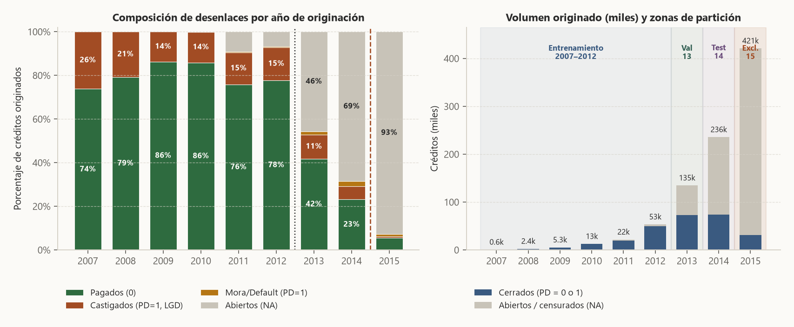
Nota. Elaboración propia sobre las 887 379 filas de data/raw/loan.csv.
Generada por scripts/graficas_particion.py.
La causa física de esta censura creciente () radica en la
duración contractual de los préstamos frente a la fecha de recolección del archivo (diciembre de
2015). Todos los créditos de 36 meses originados entre 2007 y 2012 vencieron a
más
tardar en 2015 (0,0 % a 0,1 % abiertos). En cambio, desde 2013 ni siquiera los
préstamos de 36 meses
habían cumplido su plazo normal en diciembre de 2015, por lo que los pocos créditos marcados como
Fully Paid en 2013–2015 corresponden a prepagos anticipados mientras la gran mayoría de buenos
pagadores permanece en Current.
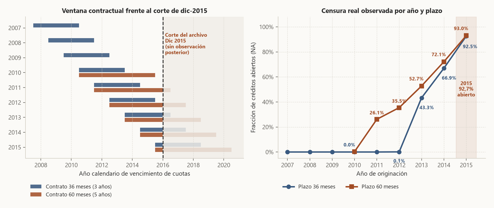
Nota. Elaboración propia sobre data/raw/loan.csv cruzando año de
originación (issue_d) y plazo (term).
Adicionalmente, la partición debe respetar el orden cronológico (issue_d) y no hacerse de
forma
aleatoria (): la tasa observada de incumplimiento cambia año
tras año (pasa de 13,7 % en 2009 a 16,7 % en 2012 y sube a
22,9 % en 2013 y 26,2 % en 2014), por lo que mezclar años ocultaría la
evolución real del riesgo en el tiempo. Al mismo tiempo, en la Parte 2 (LGD) el porcentaje de castigados que
alcanza a registrar recuperaciones cae del 74,4 %–77,4 % en 2010–2012 a
37,3 % en 2014 y se desploma a apenas 11,0 % en 2015, dejando al
89,0 % de los castigados de 2015 con una LGD aparente de 1,00 por cobranza
inconclusa.
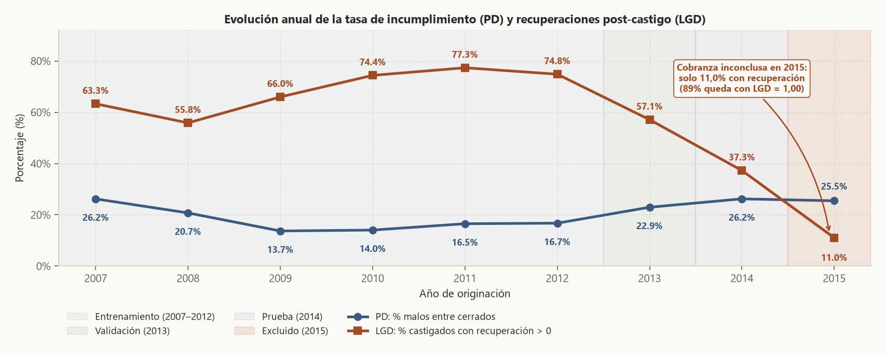
Nota. Elaboración propia sobre data/raw/loan.csv. Los castigados de
2015 apenas iniciaban cobro al momento de recolección del conjunto.
Para definir los límites exactos entre entrenamiento, validación y prueba () se descartaron alternativas como entrenar solo con 2007–2011 (que reduciría el entrenamiento a 40 534 créditos para PD y apenas 6 335 castigados para LGD, menos de la mitad del conjunto de prueba de 2013) o partir 2014 en validación y prueba (evaluando todo sobre el año utilizable más censurado). Los cortes adoptados (2007–2012 / 2013 / 2014) logran cohortes independientes por etapa y un equilibrio cercano a 1:1:1 en castigados.

Nota. Elaboración propia a partir de los conteos reales por partición en
data/raw/loan.csv.
| Conjunto | Años | Créditos (PD) | % malos | Castigados (LGD) | Censura (NA) |
|---|---|---|---|---|---|
| Entrenamiento | 2007–2012 | 90 347 | 16,30 % | 14 419 | 5,79 % |
| Validación | 2013 | 73 194 | 22,95 % | 14 836 | 45,68 % |
| Prueba | 2014 | 74 154 | 26,22 % | 13 981 | 68,53 % |
| Excluido* | 2015 | 30 835* | 25,46 %* | 2 773* | 92,68 % |
Nota. Conteos verificados sobre las 887 379 filas de loan.csv (237 695
créditos modelados en 2007–2014 y 618 849 créditos abiertos excluidos por desenlace desconocido).
*Los 30 835 cerrados de 2015 (2 773 castigados) se excluyen por sesgo de fallo temprano y cobranza
inconclusa (92,68 % de censura).
Probabilidad de incumplimiento
Parte 1 · Clasificación binaria
Se modela \(P(Y = 1 \mid X)\), la probabilidad de que un crédito sea malo, con una regresión logística como referencia y un perceptrón multicapa (MLP).
Análisis descriptivo e hipótesis
Antes de ajustar modelos, se exploró el conjunto de entrenamiento crudo con desenlace conocido (2007–2012, 90 347 créditos: 75 618 buenos y 14 729 malos; tasa base de incumplimiento: 16,30 %) sin tocar validación (2013) ni prueba (2014). Sobre ese universo se formularon y contrastaron cinco hipótesis explícitas acerca de qué perfiles presentan mayor riesgo de impago, verificadas directamente mediante las tasas observadas y las gráficas exploratorias.
\(H_1\) · Calificación de riesgo y tasa de interés (grade, int_rate) Confirmada
Hipótesis: la probabilidad de incumplimiento crece de forma estrictamente monótona a medida que
empeora el grado asignado por Lending Club (A \(\rightarrow\) G) y aumenta la tasa
de interés. En los datos (), la mora sube sin excepciones
desde
6,66 % en grado A (\(n = 20\,935\), tasa media 7,48 %) hasta
40,15 % en grado G (\(n = 680\), tasa media 21,55 %); por rangos de tasa pasa
de 6,00 % (\(< 8\,\%\)) a 39,65 % (\(\ge 20\,\%\)). Es la señal
individual más potente del conjunto.
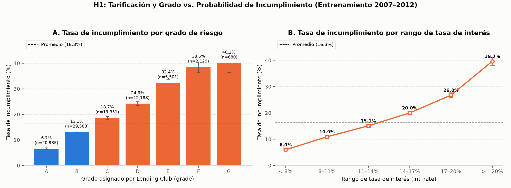
Nota. Elaboración propia sobre 90 347 créditos de entrenamiento. Generada por
Analisis_del_problema/analisis_descriptivo/descriptivo.py.
\(H_2\) · Capacidad de pago y carga financiera (dti, annual_inc) Confirmada
Hipótesis: mayor relación deuda/ingreso (dti) y menores ingresos anuales
(annual_inc) elevan el riesgo de impago por menor holgura de caja. Como muestra la , la tasa de malos crece de forma sostenida desde
13,55 % cuando dti < 10 % (\(n = 24\,296\)) hasta 22,27 %
cuando dti ≥ 30 % (\(n = 2\,232\)), mientras que por quintiles de ingreso desciende
continuamente desde 18,99 % en el quintil inferior (Q1: US$ 2k–38k) hasta
12,30 % en el superior (Q5: US$ 90k–7,14M).
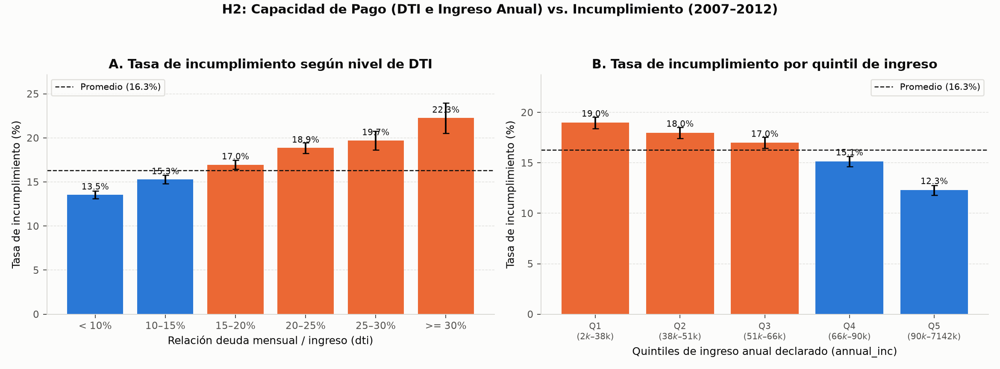
Nota. Elaboración propia. Generada por
Analisis_del_problema/analisis_descriptivo/descriptivo.py.
\(H_3\) · Estrés de liquidez rotativa y alertas del buró (revol_util,
inq_last_6mths, delinq_2yrs, pub_rec) Confirmada
Hipótesis: una utilización cercana al límite en tarjetas rotativas, múltiples consultas recientes
al buró o incidentes adversos previos incrementan el incumplimiento. En la , revol_util duplica la tasa de malos al pasar de
11,08 % (\(< 25\,\%\)) a 22,36 % (\(\ge 90\,\%\)); las consultas
recientes suben de 13,54 % (0) a 23,26 % (3+); las moras previas pasan de
16,10 % a 18,18 % (2+); y los registros públicos adversos saltan de
16,02 % a 23,06 %.

Nota. Elaboración propia. Generada por
Analisis_del_problema/analisis_descriptivo/descriptivo.py.
\(H_4\) · Condiciones del contrato: plazo y propósito (plazo_meses, purpose)
Confirmada
Hipótesis: los préstamos a 60 meses son sustancialmente más riesgosos que los de 36 meses (incluso
controlando por censura) y destinos empresariales fallan más que préstamos de consumo específicos. En todo
entrenamiento (), 60 meses registra
31,95 % frente a 13,09 % en 36 meses; al controlar por censura en la
cohorte 2010 (donde ambos plazos completaron su ciclo), la brecha real se mantiene clara:
22,51 % vs. 10,92 %. Por destino, small_business lidera el
riesgo con 28,02 % (\(n = 3\,166\)), frente a car (11,41 %),
major_purchase (11,53 %) y credit_card (12,46 %).

Nota. Elaboración propia. Generada por
Analisis_del_problema/analisis_descriptivo/descriptivo.py.
\(H_5\) (Contraste) · Verificación de ingresos, antigüedad laboral y vivienda Refutada parcialmente
Hipótesis intuitiva: ingresos verificados, mayor antigüedad laboral y vivienda propia o hipotecada
deberían reducir el incumplimiento. Sin embargo, los datos ()
muestran dos hallazgos contra-intuitivos clave: primero,
Verified presenta mayor mora (19,42 %) que Not Verified
(13,70 %), lo que refleja sesgo de selección en verificación (la plataforma audita
con mayor frecuencia montos altos o perfiles percibidos como más riesgosos); segundo, la antigüedad laboral
no
reduce el riesgo de forma monótona (< 1 año: 15,81 % frente a 10+ años: 16,93
%),
pero el grupo Sin dato (\(n = 2\,897\)) salta a 21,33 %, validando el valor
informativo de registrar el dato faltante. Solo en vivienda se observa la tendencia esperada:
MORTGAGE (15,40 %) es menor que RENT (17,07 %).
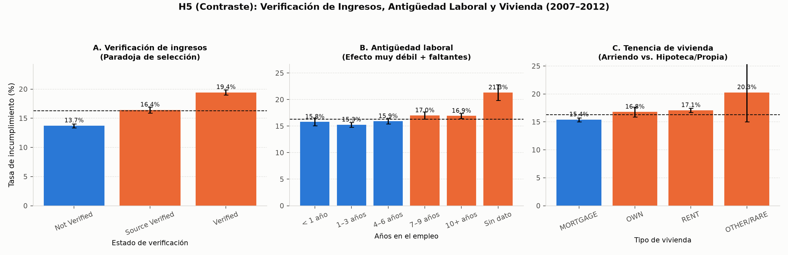
Nota. Elaboración propia. Generada por
Analisis_del_problema/analisis_descriptivo/descriptivo.py.
| Hipótesis | Variables | Evidencia empírica principal | Veredicto |
|---|---|---|---|
| \(H_1\) | grade, int_rate |
A: 6,66 % \(\rightarrow\) G: 40,15 %; tasa <8 %: 6,00 %
\(\rightarrow\) ≥20 %: 39,65 %. |
Confirmada |
| \(H_2\) | dti, annual_inc |
DTI: 13,55 % \(\rightarrow\) 22,27 %; ingreso: Q1 18,99 % \(\rightarrow\) Q5 12,30 %. | Confirmada |
| \(H_3\) | revol_util, inq_last_6mths, delinq_2yrs,
pub_rec |
revol_util ≥90 %: 22,36 %; 3+ consultas: 23,26 %;
pub_rec 1+: 23,06 %. |
Confirmada |
| \(H_4\) | plazo_meses, purpose |
Cohorte madura 2010: 36m 10,92 % vs. 60m 22,51 %; small_business: 28,02
%. |
Confirmada |
| \(H_5\) | verification_status, antiguedad_empleo,
home_ownership |
Paradoja Verified (19,42 % > 13,70 %); empleo plano salvo
Sin dato (21,33 %); MORTGAGE 15,40 %. |
Refutada parc. |
Nota. Resultados reproducibles en
Analisis_del_problema/analisis_descriptivo/resultados/resumen_hipotesis.json.
Modelos y presupuesto de búsqueda
Para establecer una referencia rigurosa y cumplir con la regla de comparación justa del enunciado, se entrenaron tres familias de modelos sobre exactamente las mismas 54 columnas preprocesadas de entrenamiento (\(n = 90\,347\)), seleccionando cualquier hiperparámetro exclusivamente por su área bajo la curva ROC (AUC) en el conjunto de validación temporal de 2013 (\(n = 73\,194\)):
- Modelo nulo (tasa base): predice para todo crédito la proporción histórica de incumplimiento observada en entrenamiento (\(p_{\text{base}} = 16,30\,\%\)). Define el piso de discriminación nula (\(\text{AUC} = 0,5000\), \(\text{Gini} = 0\), \(\text{KS} = 0\)) y la referencia de calibración sin covariables (\(\text{Brier} = 0,2033\) y \(\text{Log-Loss} = 0,6068\) en prueba).
- Regresión logística con regularización \(L_2\): modelo lineal generalizado con enlace logit (\(54\) pesos y \(1\) intercepto: 55 parámetros entrenables). Se evaluó una rejilla explícita de 7 configuraciones del parámetro de regularización inversa \(C \in \{0,001;\; 0,01;\; 0,05;\; 0,1;\; 0,5;\; 1,0;\; 10,0\}\) con el optimizador L-BFGS en un tiempo total de 5,49 s. La configuración ganadora en validación fue \(C = 0,01\) (\(\text{AUC}_{\text{val}} = 0,6821\), intercepto \(\beta_0 = -1,6872\), ajuste individual en \(0,65\text{ s}\)), evidenciando que una regularización \(L_2\) moderadamente fuerte controla la colinealidad entre variables de monto, cuota, grado y tasa de interés.
- Perceptrón multicapa (MLP) en PyTorch: red neuronal prealimentada entrenada con
entropía cruzada binaria sobre logits (
BCEWithLogitsLoss) y parada temprana (paciencia = 10épocas sin mejora en el AUC de validación, hasta un máximo de 100 épocas por corrida). Se ejecutó una búsqueda aleatoria con presupuesto fijo de 30 configuraciones y, fijada la arquitectura ganadora, se reentrenó desde cero con 30 semillas independientes (1 a 30) para cuantificar la variabilidad por inicialización de pesos y barajado de minilotes.
Regresión logística (\(L_2, C = 0,01\))
- Parámetros
- 55
- Configuraciones
- 7 (rejilla explícita de \(C\))
- Tiempo de búsqueda
- 5,5 s (0,65 s mejor modelo)
- AUC en prueba (2014)
- 0,6820 (Gini: 0,3640 · KS: 26,51 %)
MLP final (54–64–1, ReLU, SGD)
- Parámetros
- 3 585
- Configuraciones
- 30 (búsqueda aleatoria: 817,5 s)
- 30 semillas
- 474,5 s · AUC prueba: 0,6875 ± 0,0025
- AUC en prueba (mejor val.)
- 0,6902 (Gini: 0,3804 · KS: 27,73 %)
Búsqueda de hiperparámetros y 30 semillas
La búsqueda aleatoria del MLP exploró 30 configuraciones muestreadas con semilla fija
(2026) en un tiempo total de 817,46 s (13,6 min) sobre el siguiente espacio:
arquitecturas de una a tres capas ocultas (\([16]\), \([32]\), \([64]\), \([32, 16]\), \([64, 32]\),
\([128, 64]\) y \([64, 32, 16]\), que abarcan desde \(897\) hasta \(15\,361\) parámetros), funciones de
activación ReLU, tanh y ELU, tasas de dropout en
\(\{0,0;\; 0,1;\; 0,2;\; 0,3\}\), optimizadores Adam y SGD, tasa de aprendizaje
log-uniforme en \([10^{-4}, 10^{-2}]\), penalización \(L_2\) (weight decay) log-uniforme en
\([10^{-6}, 10^{-2}]\) y tamaños de lote en \(\{128, 256, 512\}\).
La configuración ganadora fue la #15 (\(\text{AUC}_{\text{val}} = 0,6888\)), compuesta por una sola capa oculta de 64 neuronas con activación ReLU, sin dropout (\(0,0\)), optimizador SGD con tasa de aprendizaje \(9,54 \times 10^{-3}\), penalización \(L_2 = 1,72 \times 10^{-6}\) y lote de 128 créditos (3 585 parámetros). Como se aprecia en la figura de búsqueda, las arquitecturas de capacidad intermedia (\(1\,793\) a \(5\,633\) parámetros) dominan el frente de validación: redes más anchas como \([128, 64]\) (\(15\,361\) parámetros) memorizan más rápido el conjunto de entrenamiento sin superar en validación a una capa oculta bien regularizada mediante parada temprana.
| Hiperparámetro | Valor seleccionado (configuración #15) |
|---|---|
| Arquitectura (entrada · oculta · salida) | 54 · 64 · 1 (3 585 parámetros entrenables) |
| Función de activación | ReLU |
| Dropout | 0,0 |
| Función de pérdida | Entropía cruzada binaria (BCEWithLogitsLoss) |
| Optimizador | SGD |
| Tasa de aprendizaje | 0,00954 (\(9,54 \times 10^{-3}\)) |
| Penalización \(L_2\) (weight decay) | \(1,72 \times 10^{-6}\) |
| Tamaño de lote y parada temprana | 128 créditos · máx. 100 épocas (paciencia = 10 épocas sobre \(\text{AUC}_{\text{val}}\)) |
Nota. Fuente: parte_1/results/red_neuronal/mejor_configuracion.yaml y
parte_1/results/red_neuronal/busqueda_resumen.json.
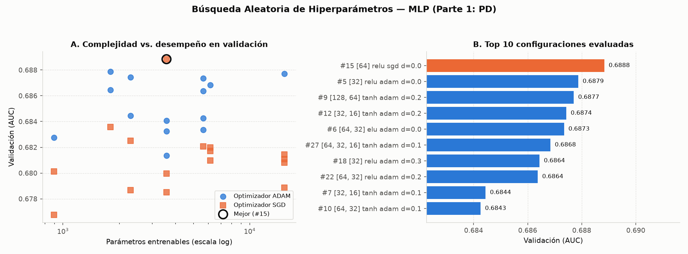
Nota. Elaboración propia. Generada por parte_1/src/red_neuronal.py.
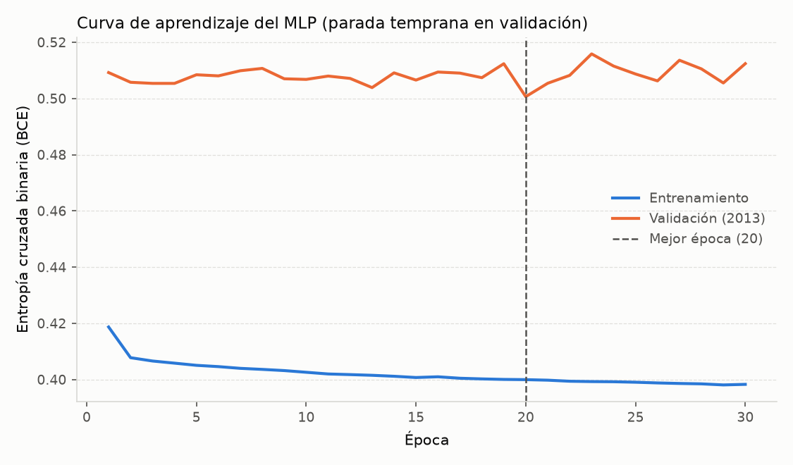
Nota. Elaboración propia. La diferencia de nivel vertical entre la pérdida de
entrenamiento (\(\approx 0,400\)) y la de validación (\(\approx 0,501\) en la época 20) obedece al salto en
la tasa de incumplimiento observada entre 2007–2012 (16,30 %) y 2013 (22,95 %). Generada por
parte_1/src/red_neuronal.py.
Fijada la arquitectura #15, se entrenaron 30 semillas independientes (semillas 1 a 30, en 474,48 s totales, equivalentes a \(15,8\text{ s}\) por corrida). La tabla siguiente resume la distribución completa de resultados. La variabilidad entre semillas es muy baja (desviación estándar de \(0,0021\) en el AUC de validación y \(0,0025\) en el AUC de prueba). Más importante aún: incluso la peor de las 30 semillas del MLP en prueba (\(\text{AUC} = 0,6822\)) supera a la regresión logística optimizada (\(\text{AUC} = 0,6820\)), lo que demuestra que la ganancia de la red neuronal no es producto de una semilla afortunada. Siguiendo el protocolo sin fuga hacia prueba, se guardó como modelo final la semilla 17 por haber obtenido el mayor AUC en validación (\(\text{AUC}_{\text{val}} = 0,6901\)).
| Conjunto | Métrica | Media | Desv. est. | Mínimo | Máximo |
|---|---|---|---|---|---|
| Entrenamiento | AUC | 0,7196 | 0,0044 | 0,7110 | 0,7275 |
| Entrenamiento | KS | 0,3180 | 0,0067 | 0,3056 | 0,3288 |
| Entrenamiento | Brier | 0,1235 | 0,0006 | 0,1224 | 0,1248 |
| Validación (2013) | AUC | 0,6871 | 0,0021 | 0,6826 | 0,6901 |
| Validación (2013) | Gini | 0,3741 | 0,0041 | 0,3651 | 0,3802 |
| Validación (2013) | KS | 0,2712 | 0,0036 | 0,2646 | 0,2785 |
| Validación (2013) | Brier | 0,1645 | 0,0003 | 0,1635 | 0,1650 |
| Prueba (2014) | AUC | 0,6875 | 0,0025 | 0,6822 | 0,6905 |
| Prueba (2014) | Gini | 0,3749 | 0,0049 | 0,3643 | 0,3811 |
| Prueba (2014) | KS | 0,2744 | 0,0042 | 0,2657 | 0,2808 |
| Prueba (2014) | Brier | 0,1806 | 0,0006 | 0,1792 | 0,1816 |
| Prueba (2014) | Log-Loss | 0,5439 | 0,0018 | 0,5396 | 0,5470 |
Nota. Semillas 1 a 30 con arquitectura 54–64–1 (3 585 parámetros). El modelo final
guardado corresponde a la semilla 17 (seleccionada por el máximo AUC en validación: 0,6901). Fuente:
parte_1/results/red_neuronal/resumen_semillas.csv.
Evaluación: discriminación y calibración
En el conjunto de prueba de 2014 (\(n = 74\,154\), tasa observada de incumplimiento de \(26,22\,\%\)), el MLP supera de forma simultánea a la regresión logística en todas las métricas de discriminación y de calibración probabilística. En discriminación, el MLP final eleva el AUC de 0,6820 a 0,6902 (\(+0,82\) puntos de AUC; media de 30 semillas: \(0,6875\)), el índice de Gini de 0,3640 a 0,3804 (\(+1,64\) puntos) y el estadístico KS de 26,51 % a 27,73 % (\(+1,23\) puntos porcentuales). La separación máxima entre las funciones de distribución acumulada de buenos pagadores \(F_{\text{buenos}}(p)\) e incumplidos \(F_{\text{malos}}(p)\) se alcanza en el umbral óptimo \(p^* = 0,200\), punto que permite fijar un corte operativo de admisión con máxima distancia entre ambas poblaciones.
| Modelo | Conjunto | PD media | AUC | Gini | KS | Brier | ECE |
|---|---|---|---|---|---|---|---|
| Modelo nulo | Validación | 0,1630 | 0,5000 | 0,0000 | 0,0000 | 0,1812 | 0,0665 |
| Reg. logística (\(C=0,01\)) | Validación | 0,1933 | 0,6821 | 0,3641 | 0,2665 | 0,1661 | 0,0417 |
| MLP (30 semillas) | Validación | 0,2031 | 0,6871 | 0,3741 | 0,2712 | 0,1645 | — |
| MLP final (sem. 17) | Validación | 0,2100 | 0,6901 | 0,3802 | 0,2785 | 0,1635 | 0,0264 |
| Modelo nulo | Prueba | 0,1630 | 0,5000 | 0,0000 | 0,0000 | 0,2033 | 0,0991 |
| Reg. logística (\(C=0,01\)) | Prueba | 0,1977 | 0,6820 | 0,3640 | 0,2651 | 0,1831 | 0,0645 |
| MLP (30 semillas) | Prueba | 0,2086 | 0,6875 | 0,3749 | 0,2744 | 0,1806 | — |
| MLP final (sem. 17) | Prueba | 0,2152 | 0,6902 | 0,3804 | 0,2773 | 0,1792 | 0,0474 |
Nota. Tasas de incumplimiento observadas: 16,30 % en entrenamiento (2007–2012),
22,95 % en validación (2013) y 26,22 % en prueba (2014). Log-Loss en prueba: 0,6068 (nulo), 0,5511
(logística), 0,5439 (MLP 30 semillas) y 0,5396 (MLP final). ECE: error de calibración esperado por
deciles. Fuentes: parte_1/results/regresion_logistica/metricas.csv,
parte_1/results/red_neuronal/resumen_semillas.csv y
parte_1/results/evaluacion/metricas_evaluacion.csv.

Nota. Elaboración propia. Generada por parte_1/src/evaluacion.py.
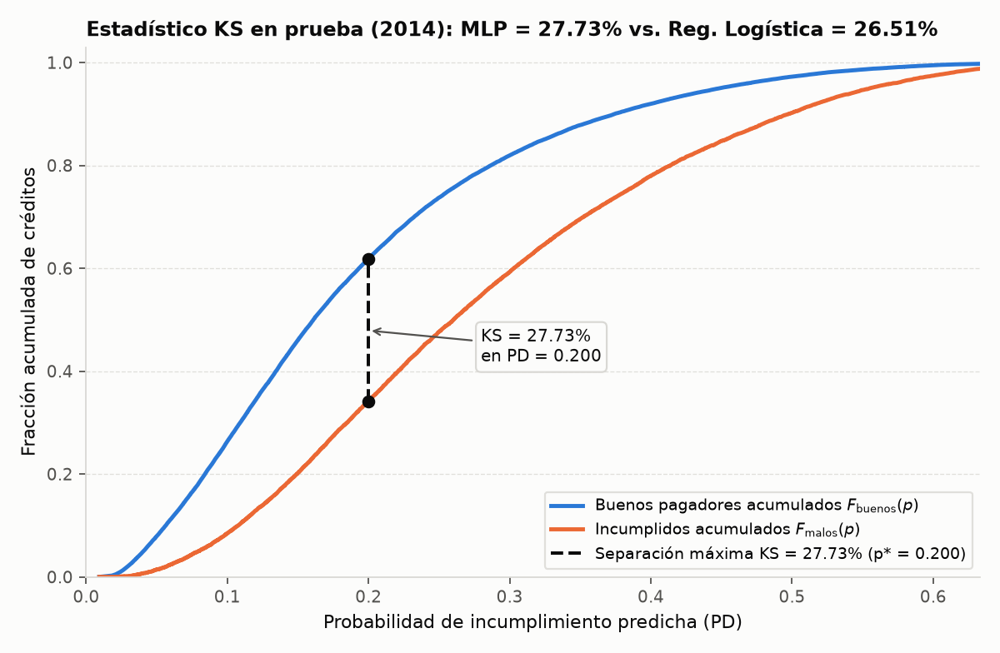
Nota. Elaboración propia. Generada por parte_1/src/evaluacion.py.
En calibración por deciles, ambos modelos ordenan de manera estrictamente monótona el riesgo real desde el primer hasta el décimo decil (en el MLP de prueba, la tasa observada sube de \(7,58\,\%\) en el decil 1 a \(50,39\,\%\) en el decil 10). No obstante, el MLP logra un puntaje de Brier menor (0,1792 frente a 0,1831) y reduce el error de calibración esperado (ECE) de 6,45 % a 4,74 % en prueba (y de 4,17 % a 2,64 % en validación). Esto ocurre porque el MLP captura mejor el cambio de composición hacia préstamos de 60 meses y tasas más altas en 2013–2014, prediciendo una PD media de \(21,52\,\%\) en prueba frente a \(19,77\,\%\) de la regresión logística. La brecha vertical remanente frente a la diagonal \(y = x\) en 2014 (\(26,22\,\%\) observado frente a \(21,52\,\%\) predicho) corresponde exactamente al sesgo de censura por maduración documentado en la Sección 3.3, donde los créditos sanos de 60 meses originados en 2014 seguían vigentes (Current) al corte del archivo.
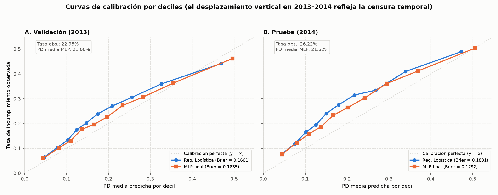
Nota. Elaboración propia. Generada por parte_1/src/evaluacion.py.
Scorecard
La scorecard crediticia traduce la probabilidad de incumplimiento estimada \(p = \widehat{\text{PD}}\) a una escala entera de puntos en la que un mayor puntaje representa menor riesgo (mayores odds de ser buen pagador, \(\text{odds} = (1 - p)/p\)). Siguiendo el estándar de la industria bancaria (Siddiqi, 2017), se fijaron tres parámetros de anclaje: un puntaje base \(P_0 = 600\text{ puntos}\) para unas odds de referencia de \(\theta_0 = 19:1\) (19 buenos por cada malo, equivalente a \(p_0 = 1/(1 + 19) = 5,0\,\%\)) y un incremento de \(\text{PDO} = 20\text{ puntos}\) por cada duplicación de las odds de cumplimiento:
Sustituyendo \(P_0 = 600\), \(\theta_0 = 19\) y \(\text{PDO} = 20\), se obtienen las constantes exactas de escalado \(B = \text{PDO}/\ln 2 = 28,8539\) y \(A = P_0 - B\ln\theta_0 = 515,0414\). En el caso particular de la regresión logística, como el logit es \(\ln(p/(1 - p)) = \beta_0 + \sum_{j=1}^{54} \beta_j x_j\), el puntaje se descompone en una suma aditiva exacta de puntos por variable:
\[ \text{Puntaje}_{\text{LR}}(\mathbf{x}) = \underbrace{(A - B\beta_0)}_{\text{Puntaje base } = 563,72} + \sum_{j=1}^{54} \underbrace{(-B\beta_j x_j)}_{\Delta\text{Puntos}_j} \]
donde la diferencia numérica máxima entre sumar la tabla de puntos por variable y aplicar la ecuación de log-odds sobre la probabilidad predicha en los \(74\,154\) créditos de prueba es de apenas \(2,27 \times 10^{-13}\text{ puntos}\) (precisión de máquina). En el MLP final, la misma transformación log-odds sobre \(p = \widehat{\text{PD}}_{\text{MLP}}\) produce en prueba (2014) una media global de \(558,38 \pm 25,91\text{ puntos}\), separando nítidamente la mediana de los buenos pagadores (\(562,69\text{ puntos}\)) de la mediana de los incumplidos (\(545,20\text{ puntos}\)) por \(17,49\text{ puntos}\) (casi un PDO completo).
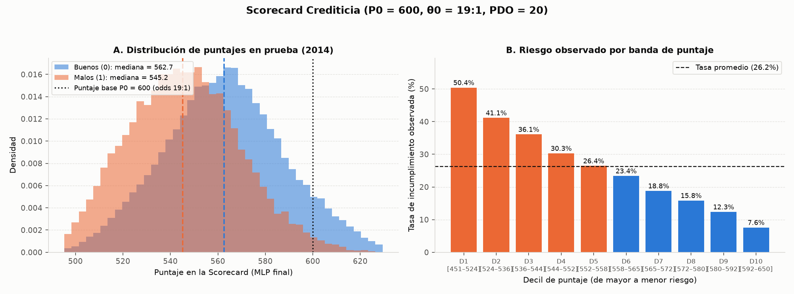
Nota. Elaboración propia. Generada por parte_1/src/scorecard.py.
| Banda | Rango | Media pts. | Créditos | Malos | PD pred. | Tasa obs. |
|---|---|---|---|---|---|---|
| D1 | [450,9 – 524,5] | 514,3 | 7 416 | 3 737 | 50,62 % | 50,39 % |
| D2 | (524,5 – 535,9] | 530,6 | 7 415 | 3 050 | 36,91 % | 41,13 % |
| D3 | (535,9 – 544,4] | 540,3 | 7 415 | 2 675 | 29,45 % | 36,08 % |
| D4 | (544,4 – 551,5] | 548,0 | 7 416 | 2 245 | 24,19 % | 30,27 % |
| D5 | (551,5 – 558,1] | 554,8 | 7 415 | 1 960 | 20,16 % | 26,43 % |
| D6 | (558,1 – 564,6] | 561,4 | 7 415 | 1 732 | 16,73 % | 23,36 % |
| D7 | (564,6 – 571,6] | 568,0 | 7 416 | 1 392 | 13,79 % | 18,77 % |
| D8 | (571,6 – 580,0] | 575,6 | 7 415 | 1 173 | 10,95 % | 15,82 % |
| D9 | (580,0 – 592,5] | 585,6 | 7 415 | 915 | 8,01 % | 12,34 % |
| D10 | (592,5 – 649,6] | 605,2 | 7 416 | 562 | 4,41 % | 7,58 % |
Nota. D1 agrupa el decil de mayor riesgo y D10 el de menor riesgo. La tasa de
incumplimiento observada desciende de forma estrictamente monótona en las 10 bandas, logrando una razón de
discriminación de \(6,65\times\) entre D1 (50,39 %) y D10 (7,58 %). Fuente:
parte_1/results/scorecard/resumen_bandas_scorecard.csv.
| Variable transformada | Unidad de cambio | Coeficiente \(\beta_j\) | Puntos (\(-B\beta_j\)) | Efecto sobre el puntaje |
|---|---|---|---|---|
purpose = small_business |
Categoría activa (1) | +0,5751 | −16,59 | Mayor penalización individual (microempresa) |
annual_inc |
+1 desv. est. | −0,3935 | +11,35 | Mayor factor protector por capacidad de pago |
int_rate |
+1 desv. est. | +0,3514 | −10,14 | Penalización directa por mayor tasa de originación |
purpose = credit_card |
Categoría activa (1) | −0,3482 | +10,05 | Refinanciación de tarjeta con menor riesgo relativo |
plazo_meses |
+1 desv. est. (60 vs. 36 m) | +0,2788 | −8,04 | Castigo por exposición prolongada a 60 meses |
grade = A |
Categoría activa (1) | −0,1809 | +5,22 | Bonificación adicional por mejor calificación |
inq_last_6mths |
+1 desv. est. | +0,1625 | −4,69 | Castigo por búsqueda reciente de liquidez |
total_acc |
+1 desv. est. | −0,0921 | +2,66 | Bonificación por amplitud de historial crediticio |
revol_util |
+1 desv. est. | +0,0877 | −2,53 | Castigo por saturación de cupo revolvente |
home_ownership = MORTGAGE |
Categoría activa (1) | −0,0830 | +2,39 | Bonificación por tenencia de vivienda con hipoteca |
missingindicator_antiguedad_empleo |
Faltante activo (1) | +0,0746 | −2,15 | Penalización por omitir antigüedad laboral |
dti |
+1 desv. est. | +0,0639 | −1,84 | Castigo por mayor carga de deuda sobre ingreso |
Nota. Selección de las 12 características con mayor impacto interpretable entre las
54 columnas del modelo lineal. La tabla completa se encuentra en
parte_1/results/scorecard/tabla_puntos_variables.csv.
Variables de riesgo e interpretabilidad
Para comparar de manera directa qué señales utiliza la red neuronal frente a la regresión logística sin
fragmentar artificialmente las variables que tienen indicador de dato faltante o codificación
one-hot, se aplicó importancia por permutación agrupada en el conjunto de prueba de
2014 (\(10\) repeticiones aleatorias con semilla 2026). En cada repetición se permutan de forma
simultánea todas las columnas transformadas que pertenecen a una misma variable original (por ejemplo, el
valor escalado de annual_inc junto con su indicador de faltante, o las 7 columnas binarias de
grade), midiendo la caída media en el AUC de prueba (\(\Delta\text{AUC}\)).

Nota. Elaboración propia. Barras de error: \(\pm 1\) desviación estándar sobre 10
permutaciones independientes. Generada por parte_1/src/interpretabilidad.py.
| Pos. | Variable original | Cols. | \(\Delta\text{AUC} \times 100\) (MLP) | \(\Delta\text{AUC} \times 100\) (Logística) | Conexión con hipótesis y lectura financiera |
|---|---|---|---|---|---|
| 1 | int_rate |
1 | 3,95 ± 0,10 | 5,02 ± 0,13 | Confirma \(H_1\): predictor #1 en ambos modelos; absorbe la señal continua de
grade. |
| 2 | annual_inc |
2 | 3,48 ± 0,10 | 1,99 ± 0,07 | Confirma \(H_2\): el MLP extrae +75 % más señal no lineal del ingreso que la regresión logística. |
| 3 | plazo_meses |
1 | 2,53 ± 0,09 | 2,07 ± 0,09 | Confirma \(H_4\): la duración del contrato (36 vs. 60 m) es el tercer pilar de riesgo. |
| 4 | revol_util |
2 | 0,77 ± 0,03 | 0,44 ± 0,03 | Confirma \(H_3\): la saturación del cupo revolvente duplica su aporte en el MLP. |
| 5 | open_acc |
2 | 0,58 ± 0,03 | 0,23 ± 0,02 | Interacción con el número de líneas abiertas y exposición crediticia activa. |
| 6 | loan_amnt |
1 | 0,56 ± 0,04 | 0,22 ± 0,02 | El MLP combina monto solicitado, ingreso y plazo para medir esfuerzo de pago. |
| 7 | dti |
1 | 0,48 ± 0,03 | 0,51 ± 0,01 | Confirma \(H_2\): carga de deuda mensual consistente en ambos modelos. |
| 8 | total_acc |
2 | 0,40 ± 0,02 | 0,48 ± 0,02 | Profundidad del historial crediticio como amortiguador del riesgo. |
| 9 | antiguedad_empleo |
2 | 0,38 ± 0,05 | 0,21 ± 0,02 | Coherente con \(H_5\): su poder predictivo proviene del indicador de dato faltante. |
| 10 | installment |
1 | 0,36 ± 0,03 | −0,08 ± 0,01 | El MLP aprovecha la cuota mensual sin sufrir la colinealidad lineal con
loan_amnt. |
Nota. \(\Delta\text{AUC} \times 100\) indica cuántos puntos centesimales cae el AUC
de prueba al permutar cada variable original (10 repeticiones). Fuente:
parte_1/results/interpretabilidad/importancia_permutacion.csv.
El contraste entre la tabla de permutación y las hipótesis de la Sección 5.1 explica con claridad por qué el MLP supera a la regresión logística:
- Redistribución de la señal más allá de la tasa de interés (\(H_1\) y \(H_2\)): La
regresión logística concentra su capacidad predictiva en
int_rate(\(\Delta\text{AUC} = 5,02\) puntos), mientras que subutiliza variables con asimetría extrema comoannual_inc(\(1,99\) puntos). Gracias a su capa oculta con activación ReLU, el MLP captura el efecto saturado del ingreso anual (\(\Delta\text{AUC} = 3,48\) puntos) y sus interacciones conloan_amnt(\(0,56\) vs. \(0,22\)) einstallment(\(0,36\) vs. \(-0,08\)). Notablemente,gradeocupa el puesto 14 (\(\Delta\text{AUC} = 0,18\) puntos en MLP y \(0,15\) en logística) porque, una vez condicionada la predicción en la variable continuaint_rate, la letra del grado aporta solo un ajuste fino. - Confirmación multivariada de \(H_3\), \(H_4\) y de la refutación parcial de \(H_5\): El
plazo en meses (
plazo_meses, #3 con \(2,53\) puntos) y la utilización revolvente (revol_util, #4 con \(0,77\) puntos) ratifican las hipótesis \(H_4\) y \(H_3\). Por su parte, los tres componentes de \(H_5\) reproducen exactamente el diagnóstico descriptivo: la verificación de ingresos (verification_status) termina en el último lugar (#21, \(\Delta\text{AUC} = 0,01\) puntos) porque su correlación cruda positiva con el incumplimiento era un efecto de selección ya explicado por monto y tasa; en cambio,antiguedad_empleo(#9, \(0,38\) puntos) yhome_ownership(#12, \(0,24\) puntos) sí aportan señal genuina a través del indicador de empleo faltante (\(-2,15\) puntos en la scorecard) y la tenencia de hipoteca (\(+2,39\) puntos).
Pérdida dado incumplimiento
Parte 2 · Regresión
Definición de la variable objetivo
El LGD es la fracción de la deuda pendiente que se pierde después del proceso de cobro. Se construye con campos del conjunto de datos:
Se usan solo los créditos castigados2Charged Off: crédito declarado incobrable y enviado a cobranza, según el diccionario de LendingClub. Las recuperaciones se registran después del castigo.. Los créditos en Default o Late (31-120 days) cuentan como malos para la PD, pero no tienen cobranza registrada y su LGD saldría igual a 1 por construcción.
| Campo | Definición en el diccionario | Motivo |
|---|---|---|
funded_amnt |
Total amount committed to that loan | Lo desembolsado; se prefiere a loan_amnt y
funded_amnt_inv.
|
total_rec_prncp |
Principal received to date | Capital devuelto antes del incumplimiento. |
recoveries |
Post charge off gross recovery | Lo cobrado después del castigo. |
collection_recovery_fee |
Post charge off collection fee | Se resta porque lo retiene la agencia de cobranza. |
De los 46 009 créditos castigados, 38 casos con LGD menor que 0 se llevaron a 0 y ninguno superó 1. La media es 0,930 y la mediana 0,981: el 47 % de los Charged Off no recuperó nada, así que su LGD es exactamente 1.
Modelos y presupuesto de búsqueda
Se comparan un modelo nulo (siempre predice el LGD medio de entrenamiento), una regresión lineal y un MLP con salida sigmoide, que mantiene la predicción en \([0, 1]\). La red usa entropía cruzada binaria con objetivo fraccional (fractional logit; Papke y Wooldridge, 1996) y el optimizador Adam (Kingma y Ba, 2015).
Regresión lineal
- Parámetros
- 55
- Configuraciones
- 1
- Tiempo de ajuste
- 0,04 s
MLP (64-32-16, tanh)
- Parámetros
- 6 145
- Configuraciones
- 40
- Búsqueda
- 237,5 s
- 30 semillas
- 108,9 s
| Hiperparámetro | Valor |
|---|---|
| Capas ocultas | 64 · 32 · 16 |
| Activación | tanh |
| Dropout | 0,1 |
| Función de pérdida | Entropía cruzada binaria |
| Optimizador | Adam |
| Tasa de aprendizaje | 0,00365 |
| Penalización L2 | 2,89 × 10⁻⁵ |
| Tamaño de lote | 128 |
Nota. Fuente: parte_2/results/red/mejor_configuracion.yaml.

Nota. Elaboración propia. Generada por parte_2/src/red_lgd.py.
Evaluación: MAE, RMSE y distribución
| Modelo | Parámetros | MAE | RMSE |
|---|---|---|---|
| Nulo (media) | 1 | 0,0775 | 0,0859 |
| Nulo (mediana) | 1 | 0,0699 | 0,0811 |
| Regresión lineal | 55 | 0,0758 | 0,0858 |
| MLP (media de 30 semillas) | 6 145 | 0,0762 | 0,0855 |
Nota. Fuentes: parte_2/results/referencia/metricas.csv y
parte_2/results/red/resumen_semillas.csv.
| Conjunto | Métrica | Media | Desv. est. | Mejor | Peor |
|---|---|---|---|---|---|
| Entrenamiento | MAE | 0,0729 | 0,0006 | 0,0716 | 0,0744 |
| Entrenamiento | RMSE | 0,1155 | 0,0003 | 0,1148 | 0,1161 |
| Validación | MAE | 0,0755 | 0,0002 | 0,0750 | 0,0759 |
| Validación | RMSE | 0,0923 | 0,0001 | 0,0922 | 0,0924 |
| Prueba | MAE | 0,0762 | 0,0005 | 0,0748 | 0,0773 |
| Prueba | RMSE | 0,0855 | 0,0005 | 0,0841 | 0,0864 |
Nota. Semillas 1 a 30. El modelo guardado usa la semilla 8. Fuente:
parte_2/results/red/resumen_semillas.csv.

Nota. Elaboración propia. Generada por parte_2/src/red_lgd.py. Versión
del modelo de referencia: assets/img/figuras/parte_2/referencia/distribucion_lgd_prueba.png.
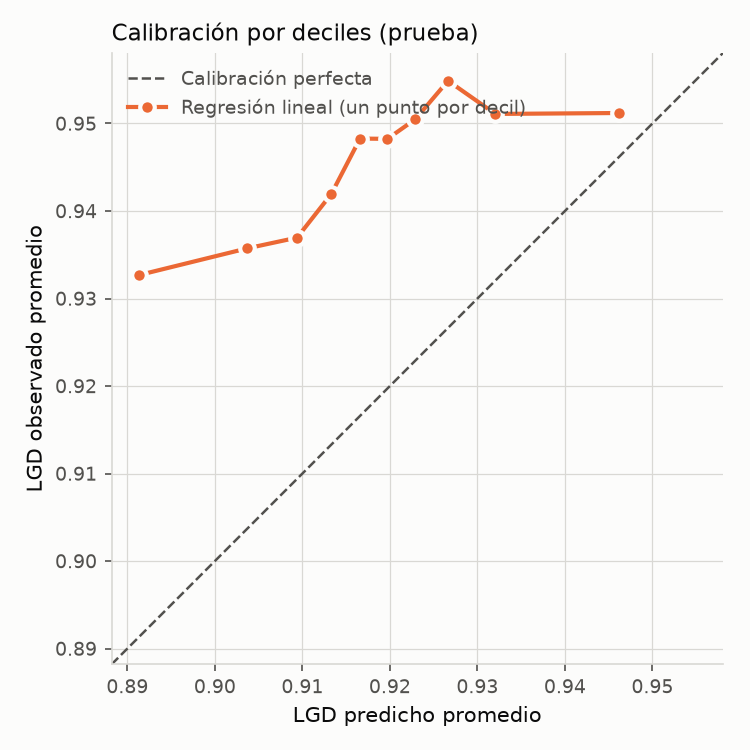

Nota. Elaboración propia. Izquierda: regresión lineal. Derecha: red neuronal.
Pérdida esperada
PD × LGD × EAD
Para cada crédito de prueba se combinan las dos partes:
La EAD por defecto es el monto desembolsado multiplicado por la fracción promedio que seguía pendiente al
incumplir, estimada en los castigados de entrenamiento y separada por plazo: 0,601 para 36 meses y 0,749
para 60 meses. Es coherente con la definición del LGD. Al integrar las probabilidades definitivas del
MLP final de la Parte 1 (intercambio/pd_prueba.csv, semilla 17) con las
predicciones de severidad de la red neuronal de la Parte 2, la pérdida esperada total del
portafolio de prueba asciende a US$ 154 013 735 (\(14,51\,\%\) del monto desembolsado),
cerrando en \(+\text{US\$ } 12,81\text{ millones}\) la brecha respecto al cálculo preliminar que usaba la
regresión logística provisional y ubicándose a solo un \(8,4\,\%\) de la cota inferior observada en los
créditos castigados (US$ 168 195 586).
| Indicador | Valor |
|---|---|
| Créditos de prueba | 74 154 |
| Monto desembolsado (US$) | 1 061 569 725 |
Pérdida esperada total (US$) · mlp_final × red_lgd |
154 013 735 (14,51 % del monto) |
| Pérdida observada, cota inferior: solo Charged Off (US$) | 168 195 586 (15,84 % del monto) |
| Pérdida observada, cota superior: + Default y Late con LGD = 1 (US$) | 229 530 555 (21,62 % del monto) |
PD media predicha (mlp_final) |
0,2152 (21,52 %) |
| Tasa real de malos observada | 0,2622 (26,22 %) |
LGD medio predicho (red_lgd) |
0,9226 (92,26 %) |
Nota. Fuente: parte_2/results/perdida_esperada/resumen.json
(pd_es_provisional: false). La cota inferior suma la pérdida real de los castigados; la
superior supone que los créditos en Default o Late (31-120 days) pierden toda su deuda
pendiente.
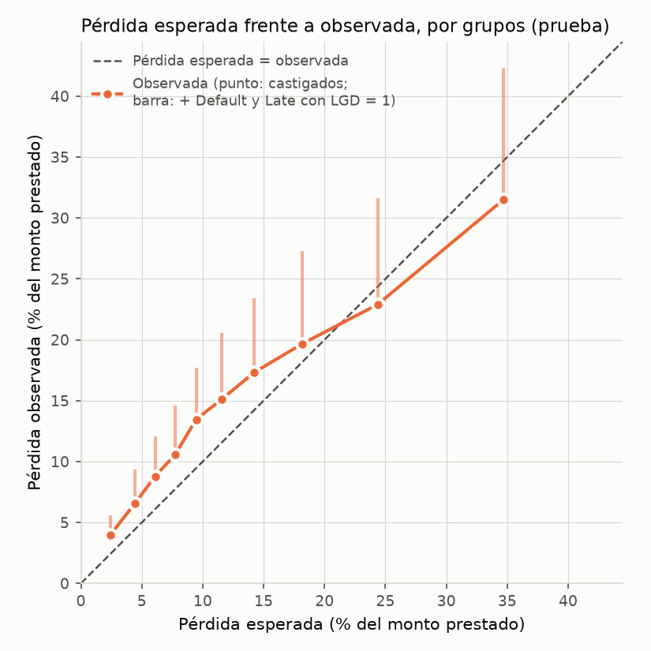
Nota. Elaboración propia. En los deciles de mayor riesgo (grupos 9 y 10, que
concentran US$ 81,0 millones de la pérdida esperada total), la tasa esperada (24,36 % y 34,66 % del monto)
queda comprendida entre la cota inferior de castigados (22,90 % y 31,48 %) y la cota superior con
morosos tardíos (31,62 % y 42,34 %). Generada por parte_2/src/perdida_esperada.py.
Comparación justa
El enunciado exige evaluar los modelos lineales de referencia y las redes neuronales sobre exactamente los mismos conjuntos de entrenamiento, validación y prueba, con el mismo preprocesador de 54 características, presupuesto de búsqueda explícito, reporte del número de parámetros entrenables y evaluación con 30 semillas independientes. La tabla siguiente consolida la auditoría de paridad experimental en ambas tareas.
| Tarea | Modelo | Parámetros | Configuraciones | Semillas | Tiempo total | Desempeño en prueba (2014) |
|---|---|---|---|---|---|---|
| PD | Modelo nulo (tasa base) | 1 | 1 | — | < 0,01 s | AUC: 0,5000 · Brier: 0,2033 |
| PD | Regresión logística (\(L_2, C=0,01\)) | 55 | 7 (rejilla \(C\)) | — (convexo) | 5,5 s | AUC: 0,6820 · KS: 26,51 % · Brier: 0,1831 |
| PD | MLP (54–64–1, ReLU, SGD) | 3 585 | 30 (aleatoria) | 30 (1 a 30) | 817,5 s + 474,5 s | AUC: 0,6875 ± 0,0025 (sem. 17: 0,6902 · KS: 27,73 % · Brier: 0,1792) |
| LGD | Modelo nulo (media / mediana) | 1 | 1 | — | < 0,01 s | RMSE: 0,0859 (media) / 0,0811 (mediana) · MAE: 0,0775 / 0,0699 |
| LGD | Regresión lineal (OLS recortada) | 55 | 1 | — (cerrado) | 0,04 s | RMSE: 0,0858 · MAE: 0,0758 |
| LGD | MLP (54–64–32–16–1, tanh, Adam) | 6 145 | 40 (aleatoria) | 30 (1 a 30) | 237,5 s + 108,9 s | RMSE: 0,0855 ± 0,0005 · MAE: 0,0762 ± 0,0005 |
Discusión
¿Qué aportó la red neuronal en cada tarea?
El contraste empírico entre las dos partes del trabajo muestra que la utilidad de un perceptrón multicapa sobre datos tabulares depende críticamente de la estructura de la señal disponible en el momento de la originación:
- En Probabilidad de Incumplimiento (Parte 1 · PD), la red neuronal aporta una mejora real,
consistente y operativamente relevante: Con \(3\,585\) parámetros (una sola capa oculta de 64
neuronas con ReLU), el MLP supera a la regresión logística regularizada (\(55\) parámetros) en las 30
semillas evaluadas (rango de AUC en prueba de \([0,6822;\; 0,6905]\) frente a \(0,6820\) del modelo
lineal). En el modelo seleccionado por validación (semilla 17), la ganancia es de \(+0,82\) puntos de AUC,
\(+1,64\) puntos de Gini, \(+1,23\) puntos porcentuales en KS (\(27,73\,\%\) vs. \(26,51\,\%\)) y una
reducción del error de calibración esperado (ECE) de \(6,45\,\%\) a \(4,74\,\%\). Como demostró el análisis
de importancia por permutación, esa ventaja proviene de capturar relaciones no lineales y de saturación en
el ingreso anual (
annual_inc: \(\Delta\text{AUC} = 3,48\) puntos en el MLP frente a \(1,99\) en la logística) y su interacción con el monto, la cuota y el plazo, a cambio de un costo computacional de \(15,8\text{ s}\) por entrenamiento individual frente a \(0,65\text{ s}\) de la regresión logística y de perder la descomposición aditiva exacta por variable en la scorecard. - En Pérdida Dado Incumplimiento (Parte 2 · LGD), el margen de mejora sobre el modelo lineal y el modelo nulo es marginal: El MLP de tres capas ocultas (\(6\,145\) parámetros) reduce el RMSE de prueba apenas de \(0,0858\) (regresión lineal) y \(0,0859\) (nulo de la media) a \(0,0855 \pm 0,0005\). Esto no es una falla del algoritmo de optimización, sino una consecuencia estructural del negocio de crédito de consumo sin garantía: al no existir colateral hipotecario ni prendario, la recuperación post castigo depende de gestiones externas de cobranza que ocurren años después del desembolso y que son casi ortogonales a las 21 variables medidas al originar, concentrando el \(47\,\%\) de los créditos castigados exactamente en \(\text{LGD} = 1,0\).
Hipótesis: confirmadas y no confirmadas
El ciclo completo entre el análisis descriptivo sobre entrenamiento (Sección 5.1) y la interpretabilidad multivariada sobre prueba (Sección 5.6) arrojó veredictos coherentes en las cinco hipótesis planteadas:
- \(H_1\) (Confirmada — Calificación y precio del riesgo): La tasa de incumplimiento se
multiplica por más de seis veces entre el grado
A(\(6,66\,\%\)) y el gradoG(\(40,15\,\%\)). En los modelos multivariados,int_ratees el predictor #1 absoluto (\(\Delta\text{AUC} = 3,95\) puntos en MLP y \(5,02\) en logística) y absorbe la mayor parte de la variación discreta degrade. - \(H_2\) (Confirmada — Capacidad de pago y endeudamiento): Menores ingresos anuales y
mayores razones deuda/ingreso elevan monótonamente la mora. Además,
annual_incse convierte en la segunda variable más importante de toda la red neuronal (\(\Delta\text{AUC} = 3,48\) puntos) y en el mayor factor protector de la scorecard aditiva (\(+11,35\) puntos por desviación estándar). - \(H_3\) (Confirmada — Estrés revolvente e historial adverso): La utilización del cupo
revolvente (
revol_util) es la cuarta variable más influyente del MLP (\(\Delta\text{AUC} = 0,77\) puntos), seguida por las consultas en los últimos 6 meses (inq_last_6mths, \(-4,69\) puntos por desviación estándar en la scorecard). - \(H_4\) (Confirmada — Horizonte contractual y propósito): El plazo de 60 frente a 36
meses (
plazo_meses) es el tercer predictor global del MLP (\(\Delta\text{AUC} = 2,53\) puntos), mientras que los créditos para pequeña empresa (purpose = small_business) registran la tasa de mora más alta (\(28,02\,\%\)) y el mayor castigo puntual de la scorecard (\(-16,59\) puntos). - \(H_5\) (Refutada parcialmente — Paradoja de verificación y valor del dato faltante):
Se refutó que estar verificado (
verification_status = Verified) reduzca el riesgo bruto (\(19,42\,\%\) vs. \(13,70\,\%\) en no verificados), revelando un sesgo de selección operativa donde Lending Club verifica con mayor frecuencia solicitudes de mayor monto y tasa; por ello, una vez controlado el resto de variables,verification_statustiene importancia nula (#21, \(\Delta\text{AUC} = 0,01\) puntos). También se refutó que la antigüedad laboral reduzca linealmente la mora entre 1 y 10+ años, pero se confirmó que la ausencia del dato (Sin dato: \(21,33\,\%\) de mora y \(-2,15\) puntos en la scorecard) constituye una señal de alerta genuina.
Aprendizajes sobre el problema
- La partición temporal exige auditar el ciclo de maduración de los contratos: Dividir por fecha de originación evita mirar el futuro, pero en carteras con plazos de 36 y 60 meses induce censura selectiva por la derecha en las cohortes recientes (2013–2014). Sin el diagnóstico de la Sección 3.3, la brecha entre la PD predicha (\(21,52\,\%\)) y la tasa observada en los préstamos cerrados de 2014 (\(26,22\,\%\)) se habría malinterpretado como un defecto del modelo y no como el efecto matemático de excluir el \(46,6\,\%\) de préstamos sanos que seguían Current.
- En datos tabulares financieros, más capacidad no equivale a mejor generalización: Una
red superficial de una capa oculta (
54–64–1, \(3\,585\) parámetros) superó consistentemente a arquitecturas profundas de hasta \(15\,361\) parámetros en PD, mientras que en LGD ningún incremento de complejidad logró vencer la ausencia de variables de garantías o de gestión de cobranza. - El acoplamiento PD × LGD × EAD demuestra el impacto financiero de la calibración: Sustituir la PD provisional de la regresión logística (\(19,77\,\%\)) por la del MLP final (\(21,52\,\%\)) incrementó la reserva de pérdida esperada del portafolio de prueba de US$ 141,21 millones a US$ 154,01 millones, reduciendo sustancialmente la subestimación frente a las pérdidas materializadas en la cartera de 2014.
Cacería de la alucinación
Al menos cinco hallazgos, en al menos tres categorías (matemáticas, código, datos del mundo real, bibliografía, conceptos). Cada uno con prompt literal, respuesta de la IA, sospecha, evidencia, corrección y lección aprendida. Una tarjeta sin evidencia no se publica.
Hallazgo 1 Categoría · pendiente
- Prompt literal
- Pendiente
- Respuesta de la IA
- Pendiente
- Cómo se sospechó
- Pendiente
- Evidencia
- Pendiente
- Corrección
- Pendiente
- Lección aprendida
- Pendiente
Hallazgo 2 Categoría · pendiente
- Prompt literal
- Pendiente
- Respuesta de la IA
- Pendiente
- Cómo se sospechó
- Pendiente
- Evidencia
- Pendiente
- Corrección
- Pendiente
- Lección aprendida
- Pendiente
Hallazgo 3 Categoría · pendiente
- Prompt literal
- Pendiente
- Respuesta de la IA
- Pendiente
- Cómo se sospechó
- Pendiente
- Evidencia
- Pendiente
- Corrección
- Pendiente
- Lección aprendida
- Pendiente
Hallazgo 4 Categoría · pendiente
- Prompt literal
- Pendiente
- Respuesta de la IA
- Pendiente
- Cómo se sospechó
- Pendiente
- Evidencia
- Pendiente
- Corrección
- Pendiente
- Lección aprendida
- Pendiente
Hallazgo 5 Categoría · pendiente
- Prompt literal
- Pendiente
- Respuesta de la IA
- Pendiente
- Cómo se sospechó
- Pendiente
- Evidencia
- Pendiente
- Corrección
- Pendiente
- Lección aprendida
- Pendiente
Reproducibilidad
Todo el proyecto usa un único entorno virtual en Python 3.12 ubicado en la raíz del repositorio y fijado en
requirements.txt. La secuencia completa para reproducir desde cero el preprocesador compartido,
la Parte 1 (PD, Scorecard e Interpretabilidad), la Parte 2 (LGD y Pérdida Esperada) y el paquete JSON del
aplicativo interactivo es la siguiente:
# 0. Instalación de dependencias (desde la raíz del repositorio)
python -m pip install -r requirements.txt
# 1. Parte 2 (ajustar primero el preprocesador compartido de 54 columnas y entrenar LGD)
cd parte_2
python -m src.preprocesamiento --config configs/lgd.yaml
python -m src.referencia_lgd --config configs/lgd.yaml
python -m src.red_lgd --config configs/lgd.yaml --modo busqueda
python -m src.red_lgd --config configs/lgd.yaml --modo semillas
# 2. Parte 1 (transformar conjuntos de PD, entrenar modelos, scorecard, permutación y exportar app)
cd ../parte_1
python -m src.preprocesamiento --config configs/pd.yaml
python -m src.regresion_logistica --config configs/pd.yaml
python -m src.red_neuronal --config configs/pd.yaml --modo busqueda
python -m src.red_neuronal --config configs/pd.yaml --modo semillas
python -m src.evaluacion --config configs/pd.yaml
python -m src.scorecard --config configs/pd.yaml
python -m src.interpretabilidad --config configs/pd.yaml
# 3. Pérdida esperada final (con intercambio/pd_prueba.csv del MLP final) y paquete web
cd ../parte_2
python -m src.perdida_esperada --config configs/lgd.yaml
cd ../parte_1
python -m src.exportar_app --config configs/pd.yaml
# 4. Servidor local para visualizar el reporte y la calculadora interactiva (desde la raíz)
cd ..
python -m http.server 8000 --directory docsPara una demostración rápida en vivo (menos de dos minutos en sustentación) se agrega la bandera
--demo a cualquier comando sin sobrescribir los artefactos finales de producción. Cualquier
hiperparámetro o umbral de partición se puede modificar desde la línea de comandos sin editar código ni
archivos YAML mediante --set, por ejemplo:
python -m src.scorecard --config configs/pd.yaml --set scorecard.pdo=40 --set scorecard.puntaje_base=700
o python -m src.red_neuronal --config configs/pd.yaml --modo entrenar --set red_neuronal.entrenar.dropout=0.25.
Contribuciones y videos
Referencias
- Ranadeep. (s. f.). Credit risk analysis [Conjunto de datos]. Kaggle. https://www.kaggle.com/datasets/ranadeep/credit-risk-dataset
- LendingClub. (s. f.). LCDataDictionary [Diccionario de datos, hoja LoanStats]. Incluido en el conjunto de datos de Kaggle.
- Papke, L. E., y Wooldridge, J. M. (1996). Econometric methods for fractional response variables with an application to 401(k) plan participation rates. Journal of Applied Econometrics, 11(6), 619–632.
- Kingma, D. P., y Ba, J. (2015). Adam: A method for stochastic optimization. 3rd International Conference on Learning Representations (ICLR 2015). https://arxiv.org/abs/1412.6980